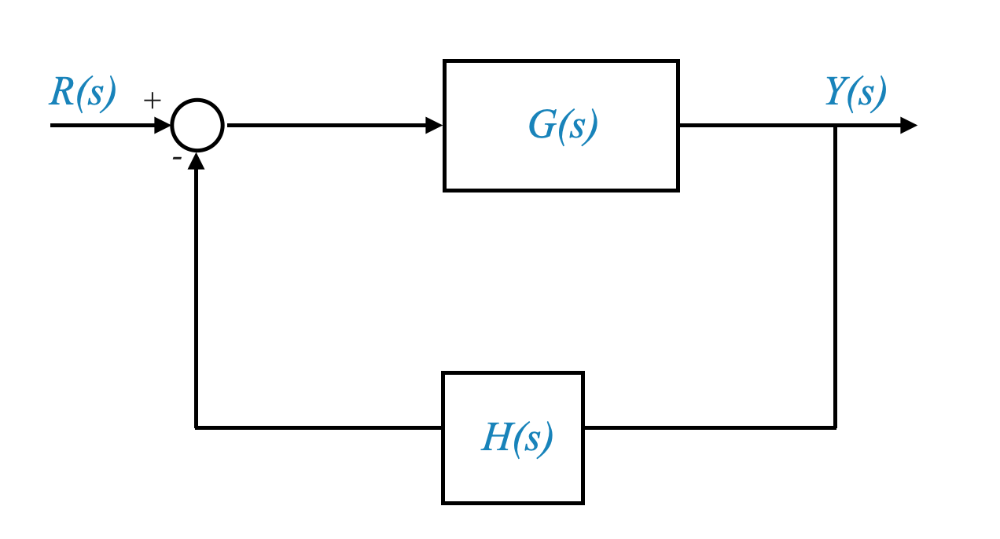
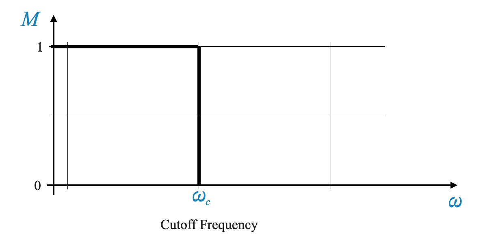
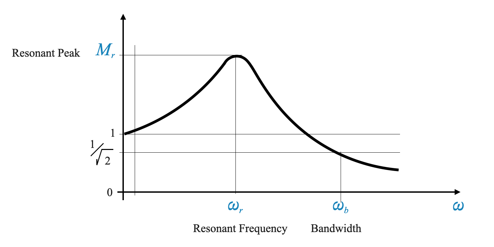
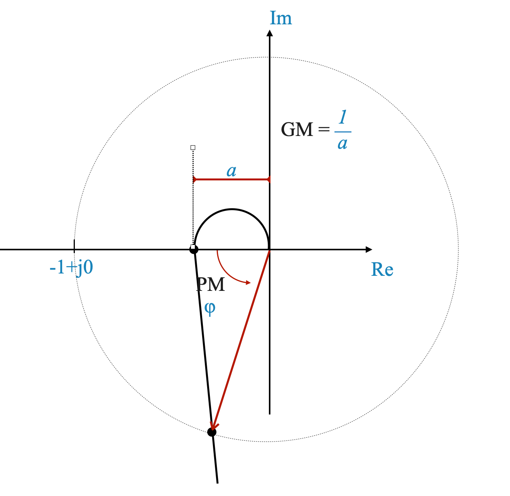
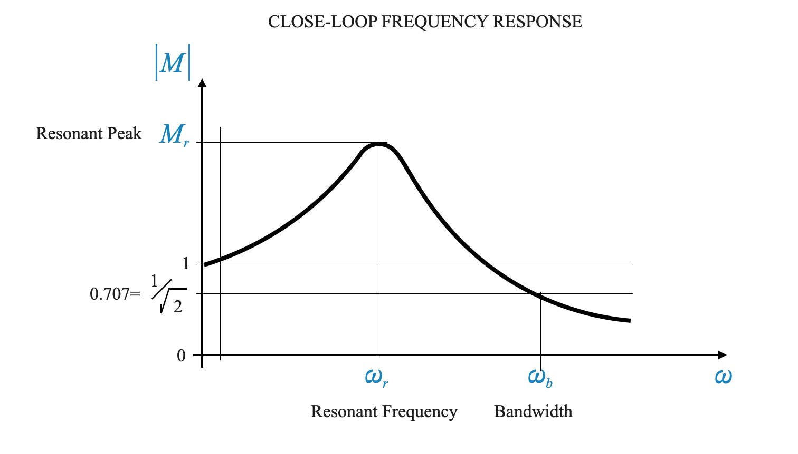
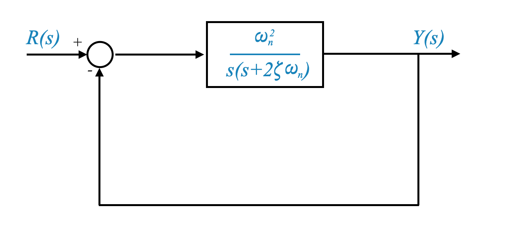
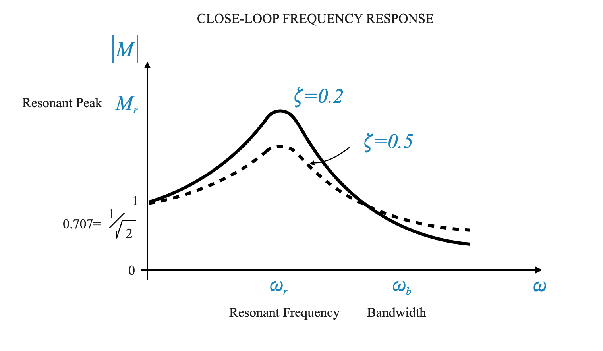
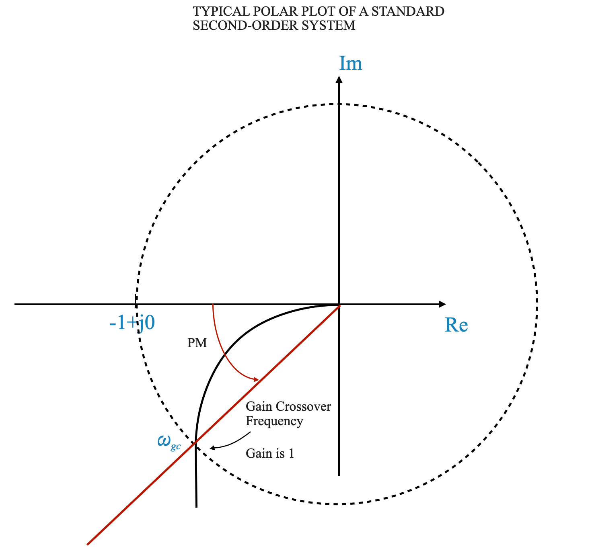
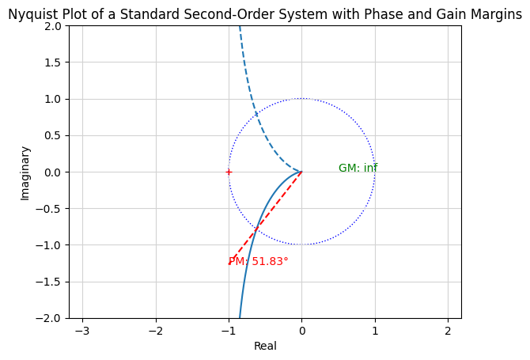
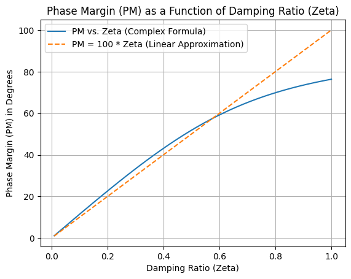

Feedback System Performance Based On Frequency Response
In our final phase of discussion, we delve into the design aspects of control systems within the frequency domain. Our focus is to understand how a system can be represented and characterized in this domain. The upcoming lectures will lay out the design algorithms essential for frequency domain analysis.
Representing and Characterizing a System in Frequency Domain
To begin with, it’s important to understand what we mean by the “frequency domain.” Unlike the time domain, where we analyze systems based on their response over time, the frequency domain focuses on how systems respond to different frequencies. This is important in control systems, especially for analyzing how systems behave under various sinusoidal inputs.
Consider a feedback system with an open-loop transfer function in the forward path, denoted as \(G(s)\), and a sensor or feedback path transfer function, \(H(s)\). The closed-loop transfer function \(M(s)\) is given by:
\[ M(s) = \frac{G(s)}{1 + G(s)H(s)} \]

To analyze these transfer functions in the frequency domain, we replace the Laplace variable $ s $ with $ j$. Thus, our closed-loop transfer function in the frequency domain becomes:
As frequency varies from 0 to infinity, understanding the behavior of the closed-loop system requires evaluating the magnitude and phase angle of \(M(j\omega)\).
In other words, I know the behavior of the closed-loop system if I am able to evaluate the magnitude and phase angle of \(M(j\omega)\).
Frequency Response
When analyzing control systems, one key concept is the open-loop frequency response \(G(j\omega)H(j\omega)\), which appears in the closed loop transfer function. This response is particularly important as it provides foundational information about the system’s behavior without the influence of a feedback loop.
Let’s break this down:
Open-Loop Frequency Response: This refers to how the system, consisting of the sensor and the plant, responds to different frequencies when there is no feedback applied. Essentially, it’s the system’s natural behavior in response to inputs.
Significance: The reason we focus on the open-loop frequency response is because it offers valuable insights into the inherent characteristics of the system. By understanding the system’s response in an open-loop state, we can make informed predictions about how it will behave once we introduce a feedback loop (i.e., in a closed-loop configuration).
To sum up, the open-loop frequency response, which includes the combined effect of the sensor and the plant (denoted as $ GH $), is a critical piece of information. It can be derived either from a theoretical model of the sensor and plant or through experimental methods to measure how the system responds to various frequencies in an open-loop state.
From Open-Loop to Closed-Loop
Let’s explore a critical aspect of control systems: determining the closed-loop behavior from the open-loop frequency response data. This task, while seemingly straightforward, actually poses a complex question that needs careful analysis.
Here’s the process broken down:
Closed-Loop Behavior Analysis: Our goal is to understand how the system behaves when feedback is applied. This is known as the closed-loop behavior.
Using Open-Loop Data: We start with what we know - the open-loop frequency response. This is the response of the system without feedback, as discussed earlier.
Transitioning to Closed-Loop: To analyze the closed-loop behavior, we apply the open-loop frequency response data into the closed-loop transfer function formula. This is a mathematical approach that integrates the open-loop data into a framework that considers feedback.
Understanding the Outcome: By applying the open-loop data to the closed-loop formula, we can calculate important aspects like the magnitude and phase angle of the closed-loop transfer function, denoted as $ M $. These calculations give us a clear picture of how the feedback alters the system’s response.
In summary, to grasp the closed-loop behavior, we need to effectively translate our understanding of the open-loop system (the system without feedback) into the closed-loop context (the system with feedback). This translation is done through the closed-loop transfer function formula, utilizing the open-loop frequency response data as our starting point.
Ideal Low-Pass Filter Characteristics in Control Systems
In control systems, the concept of a low-pass filter is essential. Let’s unpack this idea to understand its role and functionality better.
What is a Low-Pass Filter?
A low-pass filter is a type of system that allows signals with frequencies below a certain threshold (known as the cutoff frequency) to pass through it without attenuation.
Signals with frequencies above this cutoff frequency are significantly weakened or attenuated.
This characteristic makes low-pass filters ideal for blocking out unwanted high-frequency noise while permitting lower-frequency signals to pass through.
Understanding the Cutoff Frequency (\(\omega_c\))
The cutoff frequency, denoted as \(\omega_c\), is a critical point in a low-pass filter. It determines the threshold between the frequencies that are allowed to pass and those that are attenuated.
Up to this frequency, the filter maintains a constant gain, which we often consider as unity (or no change to the signal strength).
Beyond \(\omega_c\), the filter sharply reduces the gain, effectively filtering out higher frequencies.
Ideal Characteristics of a Low-Pass Filter
In an ideal low-pass filter, this transition from unity gain to zero gain at the cutoff frequency is abrupt and distinct.
This ideal behavior is highly sought after in many control systems, especially in scenarios where filtering out high-frequency noise is crucial while maintaining the integrity of lower-frequency signals.
Application in Control Systems
The low-pass filter finds its utility in various control systems where it’s essential to preserve low-frequency signals (like actual system inputs or commands) while eliminating high-frequency disturbances (like electronic noise or irrelevant rapid fluctuations)

Understanding the role of low-pass filters in control systems is important. Let’s delve into why low-pass characteristics are particularly suited for control systems.
Low-Pass Filter Characteristics in Control Systems
Ideal Low-Pass Filter: The ideal characteristic of a low-pass filter is a perfect fit for many control systems. This characteristic involves allowing low-frequency signals to pass unaltered while blocking or attenuating high-frequency signals.
Relevance to Control Systems: Control systems often deal with signals in the low-frequency range, which are the primary signals of interest, such as control commands or system inputs.
Noise Filtering: High-frequency components in the signal usually represent noise or unwanted disturbances. A low-pass filter’s ability to filter out these high-frequency components is crucial for maintaining the integrity and performance of the control system.
Practical Application in Control Systems
Real-World Scenario: In practice, control systems often exhibit low-pass filter behavior, though they might not perfectly match the ideal characteristics of an ideal low-pass filter.
Functionality: These systems are designed to let through low-frequency signals — the useful part of the signal — while reducing the impact of high-frequency noise. This ensures that the control system responds primarily to actual control inputs rather than being disrupted by noise.
Designing Control Systems with Low-Pass Characteristics
When designing a control system in the frequency domain, one of the key objectives is to imbue it with low-pass characteristics. This ensures that the system performs effectively by focusing on the low-frequency range signals while filtering out high-frequency noise.
In summary, low-pass filters are an integral concept in control systems, aligning with the primary goal of these systems to respond to relevant low-frequency signals while filtering out undesirable high-frequency noise.
Control systems often exhibit low-pass filter characteristics, filtering out high-frequency noise while preserving the low-frequency signals that are of interest.
Ideally, a low-pass filter would have a flat gain up to a certain cut-off frequency \(\omega_c\), beyond which the gain sharply drops to zero. However, such an ideal characteristic is not realizable in practice.
Typical Frequency Response of a Feedback Control System
In practice, an ideal low-pass filter is not realizable. Control systems tend to have a more gradual decline in gain beyond the cutoff frequency.

Figure: A more realistic low-pass filter characteristic showing a gradual decline in gain.
Characteristic Curve of a Feedback System
Resonant Frequency and Peak:
In a practical feedback control system, the frequency response curve exhibits a unique feature known as the resonant frequency. This is the frequency at which the system’s response (or gain) reaches its maximum.
Accompanying the resonant frequency is the resonant peak, which is the actual magnitude of this maximum response. This peak is indicative of the system’s most pronounced response to a particular frequency.
Gradual Decline Beyond Resonant Frequency:
Unlike an ideal low-pass filter with a sharp cutoff, real-world control systems typically show a more gradual decline in gain beyond the resonant frequency.
This means that instead of a sudden drop to zero gain past a certain frequency, practical systems slowly attenuate the signal as the frequency increases beyond the resonant point.
Understanding Bandwidth in Control Systems
Bandwidth Defined:
Bandwidth ($ _b $) refers to the range of frequencies over which a control system maintains a consistent gain, close to its maximum value.
This range is crucial because it determines the frequencies at which the system operates most effectively.
Setting the Cutoff Frequency:
Determining the exact point for the cutoff frequency can be challenging (see Figure above). However, in control systems, we often define the bandwidth as the frequency range where the system’s gain remains near unity.
The cutoff frequency, in this case, is where the gain drops to $ $ of the unity value. This point marks the transition from the system’s effective operational range to where it begins attenuating the signal.
We select the unity value and not the peak, because a unity value at all frequencies would be the ideal value. It would correspond to perfect tracking to any input.
Significance of Bandwidth:
Within the bandwidth, the system performs optimally, processing signals with minimal attenuation. This is the frequency range where the system’s gain is almost flat, signifying stable and effective signal handling.
Beyond the bandwidth, the system’s gain starts to decrease, indicating the start of signal attenuation. This characteristic is crucial for filtering out unwanted high-frequency signals while maintaining fidelity for signals within the bandwidth.
Practical Application:
In real-world scenarios, control systems are designed to have a specific bandwidth that aligns with the frequency range of the signals they are intended to manage or control.
By understanding and setting the appropriate bandwidth, engineers can ensure that the system responds accurately to the relevant frequencies while filtering out undesirable noise or disturbances.
The bandwidth ($ _b $) in control systems is a critical parameter that defines the range of frequencies over which the system can effectively process signals with near-unity gain. Beyond this range, the system’s efficiency in handling signals decreases, making bandwidth a vital factor in system design and performance analysis.
Bandwidth and System Performance
There is not clear cut-off frequency and for this reason,
Defining Bandwidth (\(\omega_b\)):
Bandwidth is a critical concept in control systems. It is defined based on the frequency range over which the system maintains a near-unity gain, effectively processing the signals.
Technically, the bandwidth (\(\omega_b\)) is the frequency at which the system’s gain drops to \(\frac{1}{\sqrt{2}}\) of the maximum (or unity) gain. This point is crucial because it marks the beginning of the system’s attenuation phase for higher frequencies.
Practical Implications:
The bandwidth helps in understanding how wide a range of frequencies the system can handle effectively. Within this range, the system performs optimally, maintaining a steady gain.
Beyond the bandwidth, the system’s ability to process signals diminishes, which is vital for designing control systems that need to filter out unwanted high-frequency signals.
In summary, the frequency response of a typical feedback control system is characterized by its resonant frequency and peak, followed by a gradual reduction in gain beyond this point. The bandwidth of the system, a key performance indicator, defines the range of frequencies over which the system maintains effective control and signal processing capabilities.
Quantifying System Performance
**Large Bandwidth ($ _b $)**: Desirable for good tracking performance and low rise time. It means that the system gain is as large as possible for a range of frequencies, improving tracking performance and speed of response.
Resonant Peak ($ M_r $): Should not be too high to ensure the flat gain requirement is met.
Limitations: Factors like noise characteristics and saturation risk limit the achievable bandwidth. High bandwidth means that noise might be entering the loop. Knowing the sensor characteristics means knowing the maximum bandwidth that we can support, even if that might mean trading off tracking accuracy. Large bandwidth also means large gains and hence possibly saturation. With reference to the equation below, \(M(j\omega)=1\) (large bandwidth in a large range of frequency) only when \(G(j\omega) \rightarrow \infty\):
To fully grasp a control system’s behavior, we examine its frequency response. This involves understanding how the system reacts across a range of frequencies.
Closed-Loop vs. Open-Loop Frequency Response:
It’s important to note that the frequency response we refer to here is the closed-loop response, though initially, we have access to open-loop frequency data. This means that to construct a closed-loop frequency response graph, we need to process the open-loop data accordingly.
Characterizing Parameters of Frequency Response
Resonant Frequency (\(\omega_r\)):
This is the frequency at which the system’s response reaches its maximum. It’s a critical point in understanding system behavior.
Resonant Peak (M_r):
$ M_r $ is the magnitude of the system’s response at the resonant frequency. It should ideally not be too high to ensure a stable system response.
Bandwidth (\(\omega_b\)):
The bandwidth is defined as the frequency range where the system’s response (or gain) is near its maximum. Beyond this range, the system starts attenuating signals.
Rise Time and Bandwidth:
Both \(\omega_r\) and \(\omega_b\) are linked to the system’s rise time. A shorter rise time requires larger values of \(\omega_r\) and \(\omega_b\).
Additional Indices for System Characterization
Phase Margin and Gain Margin:
These are derived from the open-loop frequency response and are indicative of the system’s relative stability in closed-loop.
The phase margin (\(\phi\)) is measured with respect to the negative real axis, and a positive phase margin suggests stability.
The gain margin, calculated as \(\frac{1}{a}\), also gives an indication of system stability.

Comprehensive System Characterization
Time Domain vs. Frequency Domain:
While we can characterize a system in the frequency domain using indices like \(\omega_r\), \(M_r\), \(\omega_b\), gain margin, and phase margin, it’s also crucial to understand their impact in the time domain.
The time domain perspective gives us insights into how the system responds to inputs like step changes and how it deals with transient errors.
Linking Time Domain and Frequency Domain:
The real challenge in system design is to correlate these two domains. This correlation is crucial for leveraging the simplicity of frequency domain design and the intuitive understanding from the time domain.
Although theoretically, time domain behavior and frequency domain behavior are linked via Fourier transform, practically, this transformation can be complex. Therefore, we often rely on simulations and approximations to make this correlation more manageable.

Key Performance Indices
A control system’s behavior in the frequency domain can be characterized by several indices:
Resonant Peak (\(M_r\))
Resonant Frequency (\(\omega_r\))
Bandwidth (\(\omega_b\))
Gain Margin (GM)
Phase Margin (PM)
Steady State Error (\(e_{ss}\))
System Constants (\(K_p, K_v, K_a\))
These specifications guide the design process and help in tuning the system to achieve the desired performance in both frequency and time domains.
These parameters are derived from the open-loop frequency response data but reflect the closed-loop behavior. They offer insights into the relative stability of the system.
Visualizing System Behavior in Time Domain
Understanding the relationship between frequency and time is key to analyzing and designing effective control systems.
Time Domain Visualization:
The time domain is particularly useful for visualizing how a system behaves in response to certain inputs, like a step input.
For instance, in the time domain, we can easily see how well a system tracks an input and identify the transient errors (the initial difference between the desired and actual response).
The dynamic behavior of a system, such as its response to changes over time, is often more intuitively understood in the time domain.
Simplifying with Frequency Domain Design
Advantages of Frequency Domain:
Designing in the frequency domain is generally simpler and more straightforward.
However, to fully leverage its advantages, we need to establish a connection between the time domain and frequency domain characteristics.
Linking Time and Frequency Domains:
This linking involves correlating parameters like resonant peak \(M_r\), resonant frequency \(\omega_r\), bandwidth \(\omega_b\), phase margin, and gain margin between the two domains.
By understanding these relationships, we can appreciate how frequency domain decisions will impact the time domain behavior.
Practical Approach
Fourier Transform Limitations:
Theoretically, the Fourier transform can be used to derive the time response from frequency response data. However, in practice, this can be complex and impractical.
Using Computational Tools:
With the advent of computers, a more practical approach is to use the transfer function derived from frequency domain data and simulate it in the time domain.
This method allows us to approximate how frequency domain parameters will manifest in the time domain, bypassing the complexities of Fourier transforms.
Approximating Relationships:
Our goal is to quickly gauge if the chosen frequency domain parameters make sense when converted into time domain behavior.
A complete and accurate depiction of time domain behavior can be achieved through thorough simulation.
What this means is that we are going to accept approximations and we will verify if the assumptions and approximations done are correct through thorough simulations. This is similar to what we did when using the dominance condition to identify two closed-loop poles that were dominant in the response of the system. This approximation is used for the initial design and then if discrepancies arise in simulations, adjustments are made accordingly.
Key Approximation in Frequency-Domain Closed-Loop System Design
Assuming Second-Order System Behavior:
A significant simplification in the design process is to approximate the behavior of the closed-loop system as being similar to a second-order system. This means we assume the system has a dominant pair of roots that predominantly influence its response.
Implications for Time Domain Visualization:
With this approximation, it becomes more straightforward to predict and visualize the system’s behavior in the time domain. For instance, understanding how the system responds to certain inputs or its overall dynamic behavior becomes more intuitive.
Dealing with Approximation Limitations:
It’s important to acknowledge that this is an approximation. If the actual system significantly deviates from a second-order behavior, there might be a noticeable discrepancy between our predictions and the actual performance observed in simulations.
To address such discrepancies, we often rely on a trial and error approach. This involves adjusting the design based on simulation outcomes to better match the expected behavior.
The Role of Simulation in Refining Design
Bridging the Gap with Simulation:
Simulations are crucial in verifying and refining our design approximations. They provide a practical view of how the system will behave, allowing us to make necessary adjustments.
Iterative Approach in Design:
System design in the frequency domain often requires an iterative process, moving back and forth between designing, simulating, and tweaking based on the simulation results. This iterative process helps ensure that the final design aligns well with the desired performance specifications.
In essence, while approximating the closed-loop system as a second-order system simplifies the design process, it’s important to validate and adjust this approximation through simulation to achieve a design that performs effectively in real-world conditions.
Before moving forward it is worth re-emphasising the use of the second-order approximation that we will be doing.
Clarification on the Use of Approximation
Scope of the Approximation:
The approximation of treating the closed-loop system as a second-order system is primarily used for quick visualization and understanding. It’s important to emphasize that this is a tool for conceptualization rather than a direct element in the actual design process.
Application in Visualization:
The main purpose of this approximation is to provide a simpler way to translate and comprehend system behavior from the frequency domain into the time domain. It’s a method to quickly gauge how the system might behave in real-time operation based on its frequency domain characteristics.
Not Directly Used in Design:
When it comes to the actual design of the system in the frequency domain, this approximation does not directly influence the design decisions or calculations. It’s not re-entered into the design process.
Caution in Design Process:
Designers should exercise caution and not overly rely on this approximation for making design choices. While it’s useful for initial understanding, the actual design should be based on more precise analyses and simulations that take into account the specific characteristics of the system.
Importance of Precision in Design
Design Accuracy:
Accurate and effective design in the frequency domain requires considering all the detailed characteristics of the system, beyond the simplifications offered by the approximation.
Role of Simulations:
Simulations play a critical role in validating the design, offering a more accurate picture of how the system will behave in various scenarios, which might differ from the simplified approximation.
The approximation of a closed-loop system as a second-order system is a helpful tool for initial visualization and understanding, it should not be directly used in the design process. Accurate design requires a detailed analysis and simulations tailored to the specific system being developed.
Pop-Up Question: Why is it important to understand both time domain and frequency domain behaviors in control systems?
Answer: Understanding both domains allows for a comprehensive view of the system’s performance. The time domain offers insights into the system’s real-world response to inputs, while the frequency domain simplifies the design and analysis process, particularly in filtering and stability aspects.
Pop-Up Question: Why is it beneficial to link time domain and frequency domain analyses?
Answer: Linking these domains allows for leveraging the simplicity of frequency domain design while appreciating and verifying system performance in the more intuitive time domain.
Approximating Second-Order System Behavior
A common approximation in control system analysis is assuming that the system behaves like a second-order system with two dominant poles. This simplification is often valid, especially when the final design exhibits two dominant poles, and non-dominant poles have a minimal effect.
Typical System Behavior: - A standard second-order system is represented by the transfer function
\[\frac{\omega_n^2}{ s(s + 2 \zeta \omega_n) }\]
and by the following feedback loop:

In many designs, such systems exhibit two dominant poles, which significantly influence the system’s behavior.
Deriving Resonant Frequency and Peak in a Second-Order System
We begin determining the resonant frequency (\(\omega_r\)) and the resonant peak (\(M_r\)). Let’s break down this process step by step for clarity.
Closed-Loop Transfer Function of a Second-Order System
This equation represents the closed-loop transfer function for a second-order system, where \(\omega_n\) is the natural frequency and \(\zeta\) is the damping ratio.
Expressing the Transfer Function with Complex Frequency
To analyze the system’s behavior at different frequencies, we express \(M(s)\) using a complex frequency \(j\omega\):
Let’s introduce a normalized frequency $ u = $. This simplifies our calculations and helps in comparing systems with different natural frequencies.
Modified Transfer Function:
With this normalized frequency, our transfer function becomes:
\[
M(ju) = \frac{1}{1 - u^2 + j 2 \zeta u}
\]
Determining Resonant Frequency and Peak
Calculating the Resonant Frequency (\(\omega_r\)):
To find the resonant frequency, we need to determine the point where the magnitude of $ M(ju) $ reaches its maximum. This involves differentiating the magnitude with respect to $ u $ and setting the derivative to zero ($ = 0 $).
Relationship Between Damping Ratio and Resonant Peak
The frequency domain index, \(\omega_r\) (resonant frequency), and \(M_r\) (resonant peak), are directly related to the time domain parameter, damping ratio (\(\zeta\)). This relationship is ties the peak overshoot in the time domain, which is a function of \(\zeta\), to the frequency domain characteristics.
The equation illustrates a direct relationship between the resonant peak (\(M_r\)) in the frequency domain and the peak overshoot in the time domain (which is obtained through \(\zeta\)).
We can make the following plot of \(M_r\) as \(\zeta\) varies:

The equation is valid for $ 0 < < 0.707 $. When $ > 0.707 $ the system behaves very close to a critically damped system and in practise there is no overshoot peak (overshoot will be between 2% and 5%). We are more interested in capturing important behaviours that can affect the stability of the system, whereas we can capture detailed behaviours through simulations.
In other words, the resonant peak equation is defined for \(0 < \zeta < 0.707\). For \(\zeta > 0.707\), the system approximates a critically damped response, with no significant overshoot. This implies that for larger values of \(\zeta\), the system’s behavior is akin to having no resonant peak, leading to a flatter frequency response.
Interpreting \(\omega_r\) and \(\omega_b\)
The values of \(\omega_r\) and \(\omega_b\) (bandwidth) can give insights into the rise time and settling time of the system. Given a specific damping ratio (\(\zeta\)), \(\omega_r\) helps determine the natural frequency (\(\omega_n\)), and consequently, the rise time and settling time.
\(\omega_r\) depends on \(\zeta\) and \(\omega_n\) and hence is representive of the rise time or settling timne.
Given \(\omega_r\) and \(M_r\) we can obtain \(\zeta\) and \(\omega_n\) and hence the transient behaviour of the system in terms of settling time, rise time, peak overshoot, etc.
The only caveat is that the system must be approximated by a second-order system. If not, in this course, we will rely on simulations only.
Calculating Bandwidth for Second-Order Systems
To calculate the bandwidth, we go back to our magnitude equation:
In time domain, \(\omega_b\) is related to the system’s rise time, settling time. In frequency domain, \(\omega_b\) is related to noise filtering characteristics.
Consistency in System Specifications
In designing control systems, especially in the frequency domain, we need to ensure that the specifications we choose are consistent and compatible with each other.
Let’s explore this concept further and understand how it applies to the selection of specifications like resonant peak (\(M_r\)), the resonant frequency (\(\omega_r\)) and bandwidth (\(\omega_b\)).
Interrelated Nature of Frequency Domain Specifications:
In the frequency domain, key parameters such as resonant frequency (\(\omega_r\)), resonant peak (\(M_r\)), and bandwidth (\(\omega_b\)) are closely interrelated. They cannot be set independently of each other as their values influence one another.
Given this interdependence, these specifications need to be consistent with each other. For instance, a change in the resonant peak (\(M_r\)) might necessitate adjustments in the bandwidth (\(\omega_b\)) or the resonant frequency (\(\omega_r\)) to maintain system coherence.
In scenarios where more than two specifications are involved, typically, one of these parameters will be a result of the other two. This means that if you specify two parameters, the third should logically follow or be derived based on those choices.
Selecting Compatible Specifications:
When multiple specifications are given for a system’s behavior, they must align with each other. For example, if you set a certain resonant frequency (\(\omega_r\)), it should be in harmony with other parameters like the resonant peak (\(M_r\)) and bandwidth (\(\omega_b\)).
Choosing Effective Specifications
Resonant Peak (\(M_r\)) and Bandwidth (\(\omega_b\)):
A practical approach in frequency domain design is to primarily use \(M_r\) and \(\omega_b\) as key specifications.
\(M_r\) effectively represents the damping characteristics, while \(\omega_b\) relates to both noise filtering characteristics and, in terms of time domain, to the rise time or settling time of the system.
Implementing in Design Algorithms:
These specifications, \(M_r\) and \(\omega_b\), can be embedded into the design algorithm. This allows for a focused and consistent approach to system design.
Additional specifications, like \(\omega_r\), can be checked for compatibility post the initial design process.
Simplification Through Specific Methods:
Having a clear method for specifying system performance can simplify the design process. By focusing on key parameters like \(M_r\) and \(\omega_b\), we can effectively control important aspects of the system’s behavior.
Obtaining Closed-Loop Frequency Response from Open-Loop Data
It’s important to understand that the critical indices for characterizing a control system — such as resonant frequency (\(\omega_r\)), resonant peak (\(M_r\)), bandwidth (\(\omega_b\)) — are derived exclusively from the system’s closed-loop frequency response.
A significant task in control system analysis is to determine the closed-loop frequency response based on the open-loop frequency response data. The open-loop response gives us insights into the system’s inherent behavior without feedback, but it’s the closed-loop response that shows us how the system will perform under actual operating conditions with feedback.
In the modern context, where computational tools are readily available, this transition becomes much more manageable. With the help of computers, we can efficiently process the open-loop data to generate the closed-loop frequency response.
Utilizing Open-Loop Data for Closed-Loop Characterization
Our goal is to find efficient methods to characterize the closed-loop frequency response of a system. The indices such as resonant peak (\(M_r\)), resonant frequency (\(\omega_r\)), and bandwidth (\(\omega_b\)) are valuable for this purpose.
The challenge is obtaining these parameters quickly, especially when we usually only have open-loop frequency response data.
We will see how to characterize the closed-loop system behavior directly using the open-loop frequency response data.
We saw one method already: the Nyquist stability criterion. This criterion allows us to infer the closed-loop behavior of the system using the open-loop frequency response data. We will see how the Nyquist Criterion and the Bode’s Plot help us understand key aspects like gain margin and phase margin directly from the open-loop data, bridging the gap between open and closed-loop analysis.
Understanding Gain Margin and Phase Margin and Application to Second-Order Systems
Gain margin and phase margin are critical parameters in assessing the stability of a control system.
Gain margin indicates how much the system’s gain can be increased before it becomes unstable, calculated as \(1/a\) where \(A\) is the gain at the phase crossover frequency.
Phase margin \(\phi\) is the additional phase shift that would bring the system to the edge of instability, offering insight into how far the system is from a potential oscillatory or unstable state.
Application to Second-Order Systems
For a standard second-order system, these stability parameters become especially significant. We can relate the system’s gain margin and phase margin to its characteristic behavior, providing a clear picture of its stability in closed loop.
For a standard second-order system, represented by the transfer function
its open-loop frequency response presents unique characteristics.
Let’s explore how to analyze this system directly from its open-loop frequency response data.
Polar Plot Characteristics
The polar plot of a standard second-order system does not cross the imaginary axis but is asymptotic to it. This behavior is a key characteristic of a type-1, second-order system.
Calculating Phase Margin for a Second-Order System
Gain Crossover Frequency (\(\omega_{gc}\)): This is the frequency at which the gain of the system is equal to unity. It is important for determining the phase margin of the system.
Phase Margin Calculation: The phase margin is calculated at the gain crossover frequency. It is the angle measured positive with respect to the negative real axis at \(\omega_{gc}\).
Gain Margin: The Gain Margin is infinity for a standard second-order system.

Figure: A polar plot of the open-loop frequency response for a standard second-order system.
We can plot it using Python as shown below.
import numpy as npimport matplotlib.pyplot as pltimport control as ctl# Define the parameters for the second-order systemomega_n =1.0# Natural frequencyzeta =0.5# Damping ratio# Define the transfer function G(s)num = [omega_n**2]den = [1, 2* zeta * omega_n, 0]G = ctl.TransferFunction(num, den)# Nyquist plot_, contour = ctl.nyquist(G, plot=True, return_contour=True)real, imag = np.real(G(contour)), np.imag(G(contour))# Plot the unit circle for referencecircle = plt.Circle((0, 0), 1, color='blue', fill=False, linestyle='dotted')plt.gca().add_artist(circle)# Annotations for Gain Margin and Phase Margingm, pm, wg, wp = ctl.margin(G)# Gain Margin# plt.plot([real[0], 1], [imag[0], 0], 'g--')plt.text(0.5, 0, f'GM: {gm:.2f}', color='green')# Phase Marginplt.plot([0, -1], [0, -np.tan(pm * np.pi /180)], 'r--')plt.text(-1, -np.tan(pm * np.pi /180), f'PM: {pm:.2f}°', color='red')plt.title("Nyquist Plot of a Standard Second-Order System with Phase and Gain Margins")plt.xlabel("Real")plt.ylabel("Imaginary")plt.grid(True)plt.axis('equal')plt.xlim((-2,1))plt.ylim((-2,2))plt.show()

Gain Crossover Frequency and Phase Margin
Deriving Gain Crossover Frequency (\(\omega_{gc}\))
For a standard second-order system, the gain crossover frequency can be found by setting the magnitude of the open-loop frequency response to 1:
We need to be careful with the signs of the angles:
Phase Margin as a Function of Damping Ratio (\(\zeta\))
For a standard second-order system, the phase margin is a function of \(\zeta\) only.
An interesting observation is that for values of \(\zeta\) less than 0.5, the phase margin is approximately linear and equals \(100 \times \zeta\).
To plot the Phase Margin (PM) in degrees as a function of the damping ratio (\(\zeta\)), we can write a simple Python script. The phase margin formula given is:
\[
PM = \tan^{-1}\left(\frac{2\zeta}{k}\right)
\]
where $ k = $.
This script will create a plot of the Phase Margin (PM) in degrees against the damping ratio (\(\zeta\)). You can adjust the range of \(\zeta\) values in zeta_values if you want to explore different ranges.
import numpy as npimport matplotlib.pyplot as plt# Define the range of zeta valueszeta_values = np.linspace(0.01, 1, 500) # Avoid starting from 0 to prevent division by zero# Calculate k and PM for each zetak_values = np.sqrt(np.sqrt(4* zeta_values**4+1) -2* zeta_values**2)pm_values = np.arctan2(2* zeta_values, k_values) *180/ np.pi # Convert from radians to degrees# Calculate the linear relationship PM = 100 * zetalinear_pm_values =100* zeta_values# Plot PM as a function of zetaplt.figure()plt.plot(zeta_values, pm_values, label='PM vs. Zeta (Complex Formula)')plt.plot(zeta_values, linear_pm_values, label='PM = 100 * Zeta (Linear Approximation)', linestyle='--')plt.title('Phase Margin (PM) as a Function of Damping Ratio (Zeta)')plt.xlabel('Damping Ratio (Zeta)')plt.ylabel('Phase Margin (PM) in Degrees')plt.grid(True)plt.legend()plt.show()

Correlating Frequency Domain Indices with Time Domain Behavior
Phase Margin and Gain Crossover Frequency as Indicators
Frequency Domain Representation:
The phase margin and gain crossover frequency together form a set of parameters that effectively represent a system’s behavior in the frequency domain.
Inferring Time Domain Behavior:
By analyzing these two parameters, we can draw inferences about how the system behaves in the time domain. This includes the system’s response to input changes and its overall stability characteristics.
Understanding Gain Margin in Second-Order Systems:
It’s important to note that for a second-order system, the gain margin is typically infinity. However, when dealing with higher-order systems, the gain margin becomes a finite value and plays a significant role in the design process.
A larger gain margin implies greater relative stability of the system, indicating a higher tolerance for gain increases before becoming unstable.
Integrating Phase Margin and Gain Crossover Frequency in Design
Building Design Specifications:
We can incorporate the phase margin (PM) and the gain crossover frequency into our design specifications.
These specifications will help guide the design process, ensuring that the system meets both frequency domain requirements and desired time domain performance.
Control System Design Specifications
When designing control systems, selecting the right specifications is important for achieving the desired system performance. These specifications not only influence the design but also help in fine-tuning the system to function effectively in both the frequency and time domains.
Key Specifications in Control System Design
Essential Parameters:
A typical control system design might include several critical specifications:
These parameters are not just arbitrary values; they are there to guide the design process and ensuring that the system meets its performance objectives.
Design Approaches Based on Specifications
Starting with Resonant Peak and Bandwidth:
One approach is to begin the design focusing on the Resonant Peak (\(M_r\)) and Bandwidth (\(\omega_b\)). After the initial design, we then check how the system aligns with the other specifications.
Using Phase Margin and Bandwidth:
Another common method is to use Phase Margin and Bandwidth as the starting points for the design.
Phase Margin is indicative of the damping ratio (\(\zeta\)), and Bandwidth is important for defining the system’s noise filtering capabilities.
Designing with Open-Loop Frequency Response:
If working primarily with open-loop frequency response data, the Phase Margin and Gain Crossover Frequency (\(\omega_{gc}\)) become more relevant specifications.
In such cases, if there is also a specification on Bandwidth (\(\omega_b\)), the design starts with Phase Margin and Gain Crossover Frequency, and then checks if the Bandwidth specification is met by calculating the closed-loop frequency response.
If discrepancies arise, a process of trial and error is used to adjust the design until the desired outcome is achieved.
Conclusion and Practical Application
Flexibility in Design: These design approaches illustrate the flexibility and adaptability required in control system design, ensuring that the final system meets all specified criteria.
Balancing Specifications: The key is to balance these specifications, understanding that each influences the system’s performance in distinct ways.
Check Your Understanding
Pop-Up Question: What does a high phase margin imply about the system’s stability?
Answer: A high phase margin indicates that the system has a good degree of relative stability and is far from the brink of instability.
Pop-Up Question: How do specifications like \(M_r\) and \(\omega_b\) influence the final system design?
Answer: Specifications like \(M_r\) and \(\omega_b\) directly influence the damping characteristics and response speed of the system, thus impacting its overall performance.
Pop-Up Question: Why is it important to consider multiple specifications in control system design?
Answer: Considering multiple specifications is important because it ensures a holistic approach to design, where the system’s stability, responsiveness, noise immunity, and error handling are all optimized to work together harmoniously.